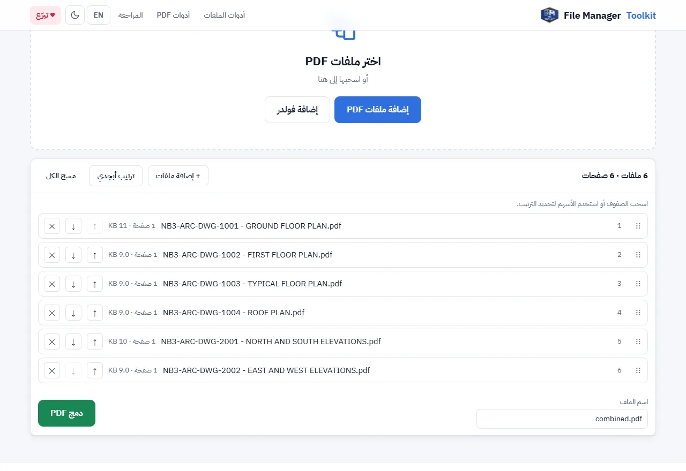

طريقة دمج ملفات PDF في ملف واحد بدون رفعها على الإنترنت
اجمع عدة ملفات PDF في ملف واحد بالترتيب الذي تريده، والملفات باقية على جهازك. بدون رفع، بدون حساب، وبدون حد لعدد الملفات.
ملفاتك بتفضل على جهازك. مفيش أي حاجة بتترفع.
الإجابة باختصار
افتح أداة دمج PDF، واضغط "إضافة ملفات PDF" أو "إضافة فولدر"، ورتّب الملفات بالسحب، واكتب اسم الملف ثم اضغط "دمج PDF". متصفحك هو الذي ينشئ الملف المدمج ويحفظه على جهازك، وملفاتك لا تُرسل لأي سيرفر.
لماذا يهم الدمج "بدون رفع"
أغلب مواقع PDF أونلاين تعمل بنفس الطريقة: ترفع ملفاتك على السيرفر الخاص بهم، والسيرفر يدمجها، ثم تنزّل النتيجة. وحتى لو وعد الموقع بحذف الملفات بعد ساعة، فقد نُسخت مستنداتك بالفعل على جهاز لا تتحكم فيه.
هذه مشكلة مع العقود ولوحات العملاء ومستندات المناقصات وملفات الموارد البشرية وأي شيء عليه اتفاقية سرية. شركات كثيرة لا تسمح لموظفيها برفع هذه الملفات على مواقع مجانية أصلاً. الدمج داخل المتصفح يحل المشكلة: الملفات تُفتح على جهازك والنتيجة تُكتب على جهازك.
خطوة بخطوة
أضف ملفات PDF
افتح الأداة واضغط "إضافة ملفات PDF"، أو "إضافة فولدر" لأخذ كل ملفات PDF في مجلد. ويمكنك أيضاً سحب الملفات من سطح المكتب إلى الصفحة.
رتّب الملفات
اسحب الصفوف، أو استخدم أسهم الأعلى والأسفل، لتحديد الترتيب. زر "ترتيب أبجدي" يرتبها حسب الاسم، وهذا مفيد عندما تكون الملفات مرقّمة.
راجع عدد الصفحات
كل صف يعرض عدد الصفحات والحجم، والسطر العلوي يعرض الإجمالي، فترى بنظرة واحدة أنه لا يوجد شيء ناقص.
سمِّ الملف وادمج
اكتب اسماً في خانة "اسم الملف"، مثل Issue 03 - Architectural set.pdf، واضغط "دمج PDF". يُحفظ الملف المدمج في مجلد التنزيلات.

كيف تتأكد بنفسك أن لا شيء يُرفع
لا تحتاج أن تصدّق كلامنا. افتح الصفحة، واضغط F12 لفتح أدوات المطور واختر تبويب Network. أضف ملفاتك وادمجها: لن تجد أي طلب يحمل ملفاتك. يمكنك حتى قطع الإنترنت بعد تحميل الصفحة وسيعمل الدمج. والكود المصدري متاح للجميع على GitHub.
نصائح
- رقّم ملفاتك أولاً، مثلاً بأداة إعادة تسمية الملفات أو التسمية من الـ Title Block، ثم استخدم الترتيب الأبجدي لتحصل على الترتيب الصحيح بضغطة واحدة.
- تحتاج بعض الصفحات فقط؟ استخدم تقسيم PDF أولاً لأخذ الصفحات التي تريدها، ثم ادمج.
- قد لا تُحفظ الإشارات المرجعية (Bookmarks) وحقول النماذج من الملفات الأصلية، فراجع الملف المدمج إذا كنت تعتمد عليها.
- ملفات PDF المحمية بكلمة سر يجب فتحها وحفظها بدون كلمة سر أولاً.
ادمج ملفات PDF الآن
مجاني، يعمل داخل متصفحك، وملفاتك لا تخرج من جهازك أبداً.
افتح أداة دمج PDF ←أسئلة شائعة
هل دمج ملفات PDF السرية هنا آمن؟
نعم. متصفحك هو الذي يقرأ الملفات ويدمجها. لا تُرفع ولا تُخزن ولا يراها أحد غيرك.
هل يمكن دمج ملفات PDF بدون إنترنت؟
نعم. بعد تحميل الصفحة يعمل الدمج بدون اتصال بالإنترنت، لأن كل العمل يتم على جهازك.
هل يوجد حد لعدد الملفات أو الصفحات؟
لا يوجد حد ثابت. الملفات الضخمة جداً تعتمد على ذاكرة جهازك، ومئات اللوحات تعمل عادة بدون مشكلة.
هل أحتاج تثبيت برنامج أو إنشاء حساب؟
لا. تعمل على Chrome و Edge و Firefox و Safari بدون تثبيت وبدون تسجيل.
هل تتغير جودة ملفات PDF؟
لا. الصفحات تُنسخ كما هي، فيبقى النص واضحاً وتبقى الرسومات المتجهة (Vector) كما هي.